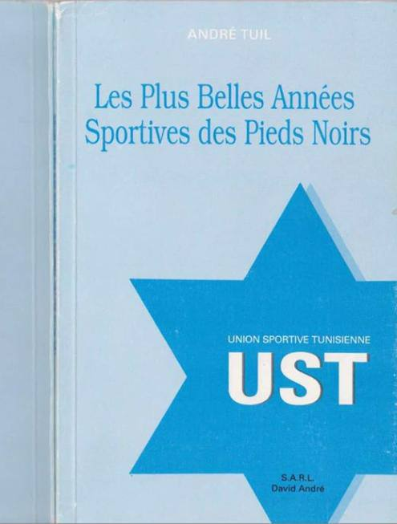

الشخصية 7 من 10 · النادي الإفريقي والأجانب قبل الاستقلال
أندري تويل
لاعب النادي الإفريقي
5 وثائق أرشيفية · الصفحة 67 من الكتاب
أندري تويل هو أيضًا يهوديّ لعب في الاتحاد الرياضي التونسي (UST) ثم في النادي الإفريقي.
في كتابه « أجمل سنوات الأقدام السوداء » (les plus belles années des pieds noirs)، يؤكد أندري (مرة أخرى) أن الترجي، خلافًا للادّعاءات الذاتية الباطلة، كان يتألف من لاعبين مسلمين فقط، مؤكدًا في الوقت نفسه أنه لم يكن الأجنبي الوحيد غير المسلم في النادي الإفريقي!